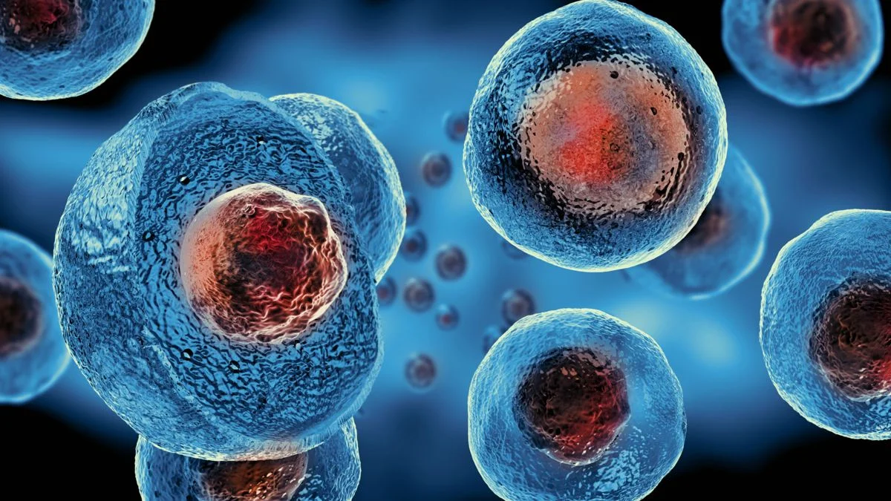

As células eucariontes (ou eucariotas) são células complexas que possuem um núcleo delimitado por uma membrana nuclear, onde está armazenado o material genético (DNA). Além do núcleo, essas células possuem diversas organelas membranosas especializadas, cada uma com funções específicas que colaboram para o funcionamento da célula.
Núcleo verdadeiro: O DNA é linear e fica confinado no núcleo, separado do citoplasma por uma membrana nuclear.
As mitocôndrias, conhecidas como as "usinas de energia" da célula, convertem a energia química dos alimentos, como a glicose, em ATP (Adenosina Trifosfato), a principal fonte de energia utilizável pela célula, por meio da respiração celular. Elas possuem duas membranas: uma externa lisa e uma interna dobrada, formando cristas, onde ocorrem as reações de produção de ATP. Além disso, as mitocôndrias contêm seu próprio DNA, o que sugere que antigamente eram organismos independentes que foram englobados por células eucariontes ancestrais, conforme a teoria da endossimbiose.
O retículo endoplasmático é uma rede contínua de membranas que se estende por toda a célula e se conecta à membrana nuclear, existindo em duas formas. O retículo endoplasmático rugoso (RER), com ribossomos aderidos à sua superfície, é responsável pela síntese de proteínas que serão exportadas da célula ou direcionadas a outras organelas. Já o retículo endoplasmático liso (REL) não possui ribossomos e está envolvido na síntese de lipídios, como hormônios e fosfolipídios, além de desintoxicar substâncias químicas, sendo particularmente ativo em células do fígado.
O citoesqueleto é uma rede de filamentos proteicos que dá suporte estrutural à célula, mantendo sua forma e organizando o transporte de materiais dentro dela. Ele é composto por microtúbulos, filamentos de actina e filamentos intermediários, que também participam do movimento celular e da divisão celular.
Os lisossomos são organelas que contêm enzimas digestivas capazes de degradar macromoléculas, como proteínas, lipídios e ácidos nucleicos. Eles atuam na digestão intracelular, degradando materiais ingeridos ou reciclando componentes celulares danificados, desempenhando um papel crucial na limpeza e manutenção celular.
A divisão celular ocorre de duas maneiras principais: a mitose, que resulta em duas células-filhas geneticamente idênticas, e a meiose, que ocorre nas células germinativas e gera gametas com metade do número de cromossomos da célula original, promovendo variação genética.